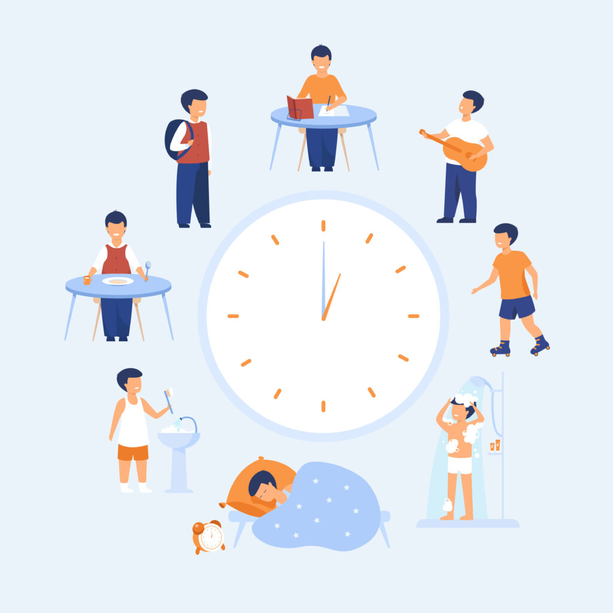

Proyecto Aula Biologia
Noe Lucio Contreras
Durante el primer parcial, se llevo acabo una investigación documental sobre los habitos, rutinas, y la manera de mantener una vida saludable. se investigaron temas relacionados con la alimentación, el ejercicio, el descanso, y las actividades que ayudan a mejorar la salud fisica y mental. En el segundo parcial se registraron nuestras rutinas diarias, como las veces que leemos, hacemos ejerecicio, corremos y los horarios en los que consumimos alimentos. Además, se tomaron fotografías como evidencia de las actividades realizadas durante todo el parcial para observar los cambios y avances obtenidos a lo largo del proyecto. Este proyecto ayudó a comprender la importancia de mantener hábitos saludables y llevar un mejro control de nuestras actividades diarias.
